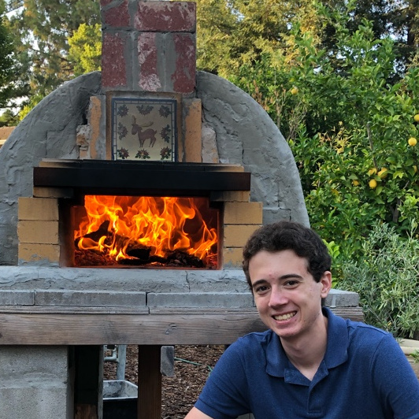

Russel Arbore’s Page
Table of Contents

1 Introduction
I’m a rising freshman at the University of Illinois at Urbana-Champaign (UIUC) in Computer Science. I have extensive experience in using PyTorch for training various deep learning models and some experience in computer vision.
1.1 You can reach me at…
- E-mail:
- LinkedIn: Russel Arbore
2 Projects
2.1 Using deep learning to non-iteratively conduct palette generation in class specific color quantization
Color quantization (CQ) is the process of reducing the amount of colors in an image with minimal loss in visual quality. The classical way of conducting CQ is by using K-Means to perform the palette generation step, which is fairly slow. This project investigated using a Convolutional Neural Network (CNN) to perform palette generation instead. We found that CNNs have the potential to perform on-par with K-Means in Mean Squared Error between the original and quantized images. Additionally, we found that CNNs have far lower runtimes than K-Means. As per our project title, we investigated whether CNNs were class specific and found that they were not. This means that CNNs can be generalized across many categories of images for CQ.
2.2 Prototyping a deep learning based hearing aid for de-noising
Hearing aids today suffer from background noise that make their usage annoying for those with hearing loss. Traditional methods of conductin de-noising such as DNR don’t account for complex noises, such as sounds resembling speech but are actually undesirable (crowded enviornments such as cafes or public spaces). We sought to instead use a deep learning model to conduct realtime de-noising. To accomplish this, we used a Jetson Nano 2GB to perform the de-noising. We chose a Fully Convolutional Neural Network (FCNN) as our de-noising model and trained on the Mozilla Common Voice dataset, the UrbanSound8K dataset, and data we collected ourselves.
3 Work Experience
3.1 Lamont-Doherty Earth Observatory
While working with the Lamont-Doherty Earth Observatory at Columbia University, I created and proved the viability of a novel method of data augmentation. This method was applied on a U-Net segmenting high-resolution satellite images of Antarctic fractures given only low-resolution images and labels for training.
3.2 Invenio Imaging
At Invenio Imaging, I created a Python framework for conducting validation tests on Invenio proprietary software and hardware and created tests covering a large portion of the software design spec.